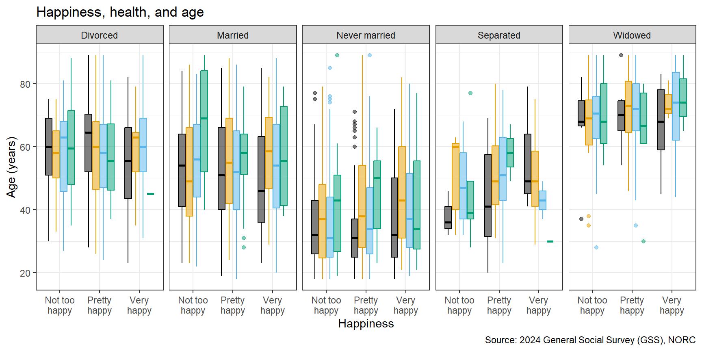
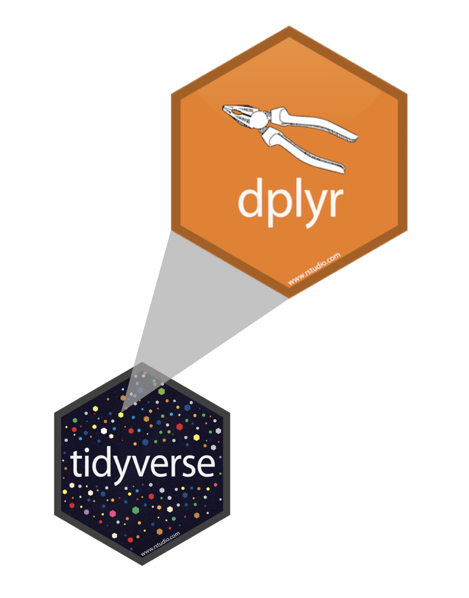

Grammar of data transformation
Lecture 4
Ramapo College
September 10, 2026
Warm up
Participate
Which of the following is true about the code below?
flightsis the name of the variable being plotted on the x-axis- The function that goes in the [blank] is
map - The data are being visualized with a scatterplot
- Some points on the plot will be colored differently than others
From last time
Start with the question
| Question | Variables | A useful first plot |
|---|---|---|
| What values are common? | One categorical | Bar chart |
| What is the distribution? | One numerical | Histogram or boxplot |
| Do groups differ? | Numerical + categorical | Boxplot or histogram by group |
| Are two categorical variables associated? | Two categorical | Filled or dodged bar chart |
| Are two numerical variables associated? | Two numerical | Scatterplot |
Interesting Questions <-> many variables
Bring the third, fourth, fifth, etc. variable to the plot using additional aesthetics such as color, shape, size, linewidth, etc. and/or with faceting (creating small multiple plots based on the levels of a variable):

Data frames and variables
- Each row of a data frame is an observation
- Each column of a data frame is a variable
gss data frame
# A tibble: 3,294 × 9
year marital_status age education_years children happiness
<dbl> <chr> <dbl> <dbl> <dbl> <chr>
1 2024 Never married 33 16 2 Not too happy
2 2024 Never married 64 16 0 Pretty happy
3 2024 Married 69 14 0 Pretty happy
4 2024 Never married 19 12 0 Pretty happy
5 2024 Divorced 70 13 3 Not too happy
6 2024 Married 53 14 2 Pretty happy
7 2024 Married 48 13 6 Pretty happy
8 2024 Divorced 30 14 1 Not too happy
9 2024 Married 60 14 2 Very happy
10 2024 Never married 25 12 0 Pretty happy
# ℹ 3,284 more rows
# ℹ 3 more variables: health <chr>, employment_status <chr>,
# party_id <chr>health variable
[1] "Good" "Good" "Good" "Good" "Good"
[6] "Good" "Good" "Good" "Good" "Good"
[11] "Good" "Excellent" "Fair" "Good" "Fair"
[16] "Excellent" "Good" "Good" "Good" "Good"
[21] "Good" "Excellent" "Good" "Good" "Good"
[26] "Good" "Good" "Good" "Good" "Good"
[31] "Good" "Good" "Excellent" "Fair" "Good"
[36] "Good" "Excellent" "Good" "Good" "Good"
[41] "Fair" "Good" "Good" "Good" "Poor"
[46] "Good" "Excellent" "Good" "Excellent" "Good"
[51] "Good" "Good" "Good" "Good" "Poor"
[56] "Fair" "Good" "Good" "Fair" "Fair"
[61] "Good" "Good" "Poor" "Excellent" "Excellent"
[66] "Fair" "Good" "Good" "Excellent" "Good"
[71] "Good" "Fair" "Good" "Fair" "Good"
[76] "Excellent" "Good" "Excellent" "Good" "Good"
[81] "Good" "Good" "Fair" "Fair" "Fair"
[86] "Fair" "Good" "Good" "Good" "Excellent"
[91] "Excellent" "Fair" "Good" "Excellent" "Good"
[96] "Good" "Good" "Excellent" "Fair" "Good"
[101] "Good" "Excellent" "Fair" "Good" "Fair"
[106] "Good" "Good" "Good" "Good" "Fair"
[111] "Good" "Good" "Fair" "Good" "Poor"
[116] "Good" "Fair" "Fair" "Excellent" "Good"
[121] "Good" "Fair" "Excellent" "Good" "Fair"
[126] "Fair" "Excellent" "Fair" "Excellent" "Fair"
[131] "Good" "Fair" "Good" "Fair" "Good"
[136] "Good" "Good" "Good" "Good" "Good"
[141] "Excellent" "Good" "Good" "Good" "Good"
[146] "Fair" "Excellent" "Good" "Good" "Good"
[151] "Good" "Fair" "Good" "Excellent" "Good"
[156] "Good" "Good" "Good" "Good" "Good"
[161] "Excellent" "Good" "Excellent" "Good" "Excellent"
[166] "Good" "Good" "Good" "Good" "Excellent"
[171] "Fair" "Poor" "Good" "Good" "Excellent"
[176] "Good" "Fair" "Fair" "Good" "Fair"
[181] "Fair" "Good" "Good" "Excellent" "Excellent"
[186] "Fair" "Good" "Excellent" "Good" "Fair"
[191] "Good" "Good" "Fair" "Excellent" "Fair"
[196] "Poor" "Fair" "Good" "Fair" "Fair"
[201] "Good" "Good" "Good" "Good" "Excellent"
[206] "Poor" "Excellent" "Good" "Good" "Good"
[211] "Good" "Good" "Good" "Fair" "Fair"
[216] "Fair" "Fair" "Good" "Good" "Good"
[221] "Good" "Good" "Good" "Fair" "Good"
[226] "Good" "Good" "Good" "Poor" "Good"
[231] "Good" "Excellent" "Good" "Fair" "Good"
[236] "Fair" "Good" "Good" "Good" "Fair"
[241] "Good" "Good" "Good" "Fair" "Fair"
[246] "Good" "Good" "Fair" "Poor" "Good"
[251] "Poor" "Fair" "Excellent" "Fair" "Excellent"
[256] "Fair" "Poor" "Good" "Good" "Good"
[261] "Excellent" "Good" "Good" "Fair" "Good"
[266] "Good" "Fair" "Good" "Good" "Fair"
[271] "Fair" "Good" "Fair" "Fair" "Fair"
[276] "Fair" "Fair" "Good" "Good" "Good"
[281] "Excellent" "Good" "Good" "Poor" "Good"
[286] "Excellent" "Good" "Good" "Excellent" "Good"
[291] "Good" "Good" "Good" "Good" "Good"
[296] "Good" "Good" "Good" "Excellent" "Excellent"
[301] "Good" "Fair" "Good" "Excellent" "Poor"
[306] "Good" "Good" "Good" "Good" "Poor"
[311] "Good" "Fair" "Fair" "Excellent" "Good"
[316] "Fair" "Good" "Fair" "Fair" "Fair"
[321] "Fair" "Good" "Good" "Good" "Good"
[326] "Fair" "Good" "Fair" "Poor" "Excellent"
[331] "Excellent" "Good" "Fair" "Good" "Fair"
[336] "Good" "Excellent" "Good" "Fair" "Good"
[341] "Good" "Good" "Fair" "Excellent" "Excellent"
[346] "Fair" "Good" "Good" "Fair" "Good"
[351] "Good" "Good" "Good" "Good" "Good"
[356] "Good" "Excellent" "Excellent" "Good" "Fair"
[361] "Good" "Excellent" "Good" "Fair" "Poor"
[366] "Good" "Fair" "Excellent" "Fair" "Fair"
[371] "Good" "Good" "Good" "Good" "Good"
[376] "Good" "Good" "Fair" "Fair" "Fair"
[381] "Excellent" "Good" "Good" "Excellent" "Good"
[386] "Good" "Poor" "Good" "Fair" "Fair"
[391] "Good" "Good" "Excellent" "Fair" "Good"
[396] "Fair" "Good" "Fair" "Good" "Excellent"
[401] "Good" "Poor" "Good" "Excellent" "Good"
[406] "Good" "Good" "Good" "Good" "Fair"
[411] "Excellent" "Good" "Fair" "Fair" "Good"
[416] "Good" "Good" "Fair" "Excellent" "Good"
[421] "Good" "Fair" "Good" "Good" "Good"
[426] "Fair" "Good" "Good" "Good" "Good"
[431] "Fair" "Excellent" "Excellent" "Excellent" "Fair"
[436] "Good" "Fair" "Fair" "Good" "Excellent"
[441] "Excellent" "Good" "Fair" "Good" "Good"
[446] "Fair" "Good" "Excellent" "Good" "Good"
[451] "Good" "Excellent" "Excellent" "Good" "Good"
[456] "Good" "Good" "Good" "Fair" "Excellent"
[461] "Fair" "Fair" "Fair" "Good" "Excellent"
[466] "Fair" "Good" "Good" "Good" "Fair"
[471] "Good" "Fair" "Good" "Poor" "Excellent"
[476] "Good" "Excellent" "Excellent" "Fair" "Excellent"
[481] "Good" "Excellent" "Good" "Fair" "Excellent"
[486] "Excellent" "Excellent" "Fair" "Excellent" "Excellent"
[491] "Fair" "Excellent" "Good" "Good" "Good"
[496] "Good" "Fair" "Good" "Poor" "Fair"
[501] NA "Excellent" "Good" "Poor" NA
[506] "Fair" "Good" "Excellent" "Good" "Poor"
[511] "Fair" "Good" "Good" "Good" "Good"
[516] "Fair" "Good" NA "Good" "Good"
[521] "Good" "Excellent" "Good" "Excellent" "Good"
[526] "Good" "Good" "Good" "Good" "Good"
[531] "Good" "Good" "Excellent" "Good" "Good"
[536] "Good" "Excellent" "Excellent" "Good" "Good"
[541] "Good" "Fair" "Good" "Excellent" "Fair"
[546] "Good" "Excellent" "Good" "Good" "Fair"
[551] "Good" "Excellent" "Excellent" "Fair" "Excellent"
[556] "Fair" "Excellent" "Good" "Good" "Good"
[561] "Fair" "Good" "Good" "Good" "Good"
[566] "Good" "Fair" "Good" "Excellent" "Excellent"
[571] "Good" "Good" "Poor" "Good" "Poor"
[576] "Good" "Excellent" "Fair" "Good" "Fair"
[581] "Good" "Fair" "Fair" "Poor" "Good"
[586] "Poor" "Good" "Fair" "Good" "Good"
[591] "Good" "Good" "Fair" "Fair" "Fair"
[596] "Poor" "Poor" "Fair" "Fair" "Good"
[601] "Fair" "Excellent" "Excellent" "Good" "Fair"
[606] "Good" "Excellent" "Good" "Good" "Good"
[611] "Excellent" "Good" "Good" "Good" "Good"
[616] "Excellent" "Fair" "Fair" "Good" "Good"
[621] "Excellent" "Good" "Fair" "Good" "Excellent"
[626] "Good" "Good" "Good" "Fair" "Good"
[631] "Fair" "Good" "Excellent" "Good" "Fair"
[636] "Fair" "Good" "Good" "Good" "Fair"
[641] "Excellent" "Fair" "Good" "Fair" "Fair"
[646] "Fair" "Excellent" "Excellent" "Good" "Good"
[651] "Good" "Good" "Fair" "Good" "Fair"
[656] "Fair" "Fair" "Good" "Fair" "Excellent"
[661] "Fair" "Good" "Good" "Good" "Good"
[666] "Good" "Good" "Good" "Fair" "Excellent"
[671] "Good" "Fair" "Excellent" "Good" "Good"
[676] "Good" "Excellent" "Excellent" "Excellent" "Good"
[681] "Fair" "Excellent" "Excellent" "Good" "Good"
[686] "Excellent" "Fair" "Good" "Good" "Excellent"
[691] "Excellent" "Good" "Fair" "Good" "Good"
[696] "Fair" "Good" "Excellent" "Fair" "Good"
[701] "Good" "Good" "Good" "Fair" "Good"
[706] "Fair" "Excellent" "Fair" "Fair" "Fair"
[711] "Good" "Fair" "Poor" "Good" "Poor"
[716] "Good" "Excellent" "Good" "Fair" "Fair"
[721] NA "Fair" "Good" "Poor" "Good"
[726] "Good" "Poor" "Fair" "Excellent" "Good"
[731] "Fair" "Good" "Excellent" "Fair" "Good"
[736] "Fair" "Fair" "Fair" "Good" "Good"
[741] "Good" "Excellent" "Good" "Good" "Fair"
[746] "Fair" "Good" "Excellent" "Excellent" "Fair"
[751] "Good" "Good" "Good" "Good" "Good"
[756] "Good" "Fair" "Good" "Good" "Excellent"
[761] "Good" "Good" "Fair" "Fair" "Fair"
[766] "Good" "Good" "Fair" "Good" "Fair"
[771] "Excellent" "Fair" "Good" "Poor" "Good"
[776] "Good" "Good" "Fair" "Good" "Fair"
[781] "Fair" "Good" "Good" "Excellent" "Excellent"
[786] "Good" "Good" "Fair" "Good" "Excellent"
[791] "Good" "Fair" "Good" "Good" "Good"
[796] "Excellent" "Excellent" "Excellent" "Good" "Good"
[801] "Poor" "Good" "Fair" "Good" "Excellent"
[806] "Good" "Fair" "Fair" "Good" "Fair"
[811] "Fair" "Good" "Good" "Excellent" "Excellent"
[816] "Good" "Excellent" "Good" "Fair" "Fair"
[821] "Excellent" "Fair" "Excellent" "Fair" "Good"
[826] "Good" "Good" "Fair" "Good" "Good"
[831] "Poor" "Fair" "Good" "Fair" "Fair"
[836] "Excellent" "Fair" "Fair" "Fair" "Good"
[841] "Fair" "Good" "Good" "Excellent" "Good"
[846] "Good" "Good" "Excellent" "Good" "Good"
[851] "Excellent" "Good" "Excellent" "Fair" "Fair"
[856] "Fair" "Excellent" "Excellent" "Good" "Fair"
[861] "Excellent" "Excellent" "Fair" "Good" "Good"
[866] "Good" "Poor" "Good" "Good" "Excellent"
[871] "Good" "Good" "Fair" "Good" "Excellent"
[876] "Good" "Good" "Good" "Good" "Good"
[881] "Good" "Good" "Good" "Good" "Fair"
[886] "Fair" "Fair" "Good" "Poor" "Good"
[891] "Fair" "Good" "Fair" "Poor" "Fair"
[896] "Good" "Good" "Good" "Fair" "Fair"
[901] "Good" "Good" "Good" "Excellent" "Good"
[906] "Good" "Excellent" "Good" "Good" "Fair"
[911] "Good" "Fair" "Excellent" "Good" "Excellent"
[916] "Good" "Good" "Good" "Good" "Good"
[921] "Excellent" "Good" "Excellent" "Good" "Good"
[926] "Good" "Good" "Good" "Excellent" "Fair"
[931] "Fair" "Excellent" "Good" "Excellent" "Good"
[936] "Good" "Good" "Good" "Good" "Excellent"
[941] "Excellent" "Fair" "Good" "Excellent" "Good"
[946] "Good" "Good" "Good" "Good" "Good"
[951] "Good" "Excellent" "Good" "Good" "Excellent"
[956] "Good" "Excellent" "Excellent" "Good" "Fair"
[961] "Good" "Good" "Good" "Excellent" "Good"
[966] "Excellent" "Good" "Good" "Excellent" "Good"
[971] "Fair" "Fair" "Good" "Fair" "Good"
[976] "Fair" "Excellent" "Excellent" "Good" "Good"
[981] "Excellent" "Fair" "Fair" "Good" "Good"
[986] "Good" "Excellent" "Excellent" "Good" "Good"
[991] "Fair" "Excellent" "Good" "Excellent" "Good"
[996] "Good" "Good" "Fair" "Good" "Excellent"
[1001] "Excellent" "Good" "Fair" "Good" "Fair"
[1006] "Fair" "Good" "Good" "Fair" "Poor"
[1011] "Good" "Excellent" "Good" "Good" "Good"
[1016] "Fair" "Good" "Excellent" "Fair" "Good"
[1021] "Good" "Good" "Fair" "Good" "Fair"
[1026] "Good" "Good" "Good" "Good" "Good"
[1031] "Good" "Fair" "Good" "Good" "Fair"
[1036] "Poor" "Good" "Good" "Good" "Fair"
[1041] "Fair" "Good" "Good" "Fair" "Good"
[1046] "Fair" "Excellent" "Good" "Good" "Fair"
[1051] "Fair" "Excellent" "Good" "Good" "Good"
[1056] "Fair" "Fair" "Excellent" "Good" "Good"
[1061] "Excellent" "Excellent" "Excellent" "Good" "Good"
[1066] "Good" "Good" "Excellent" "Excellent" "Excellent"
[1071] "Good" "Fair" "Good" "Poor" "Good"
[1076] "Good" "Good" "Fair" "Poor" "Excellent"
[1081] "Excellent" "Good" "Good" "Excellent" "Good"
[1086] "Good" "Good" "Good" "Fair" "Fair"
[1091] "Good" "Fair" "Fair" "Good" "Good"
[1096] "Good" "Fair" "Excellent" "Good" "Good"
[1101] "Good" "Fair" "Poor" "Good" "Fair"
[1106] "Fair" "Poor" "Fair" "Excellent" "Good"
[1111] "Fair" "Fair" "Good" "Good" "Good"
[1116] "Good" "Good" "Good" "Good" "Good"
[1121] "Fair" "Good" "Excellent" "Good" "Good"
[1126] "Good" "Excellent" "Fair" "Fair" "Excellent"
[1131] "Good" "Good" "Fair" "Excellent" "Fair"
[1136] "Excellent" "Good" "Good" "Poor" "Good"
[1141] "Good" "Fair" "Good" "Poor" "Good"
[1146] "Fair" "Good" "Excellent" "Good" "Good"
[1151] "Fair" "Fair" "Fair" "Fair" "Good"
[1156] "Good" "Good" "Excellent" "Excellent" "Poor"
[1161] "Fair" "Good" "Excellent" "Good" "Fair"
[1166] "Good" "Fair" "Good" "Good" "Good"
[1171] "Good" "Excellent" "Good" "Fair" "Good"
[1176] "Good" "Excellent" "Good" "Excellent" "Fair"
[1181] "Fair" "Good" "Good" "Excellent" "Good"
[1186] "Excellent" "Excellent" "Good" "Good" "Good"
[1191] "Excellent" "Good" "Excellent" "Excellent" "Good"
[1196] "Excellent" "Good" "Good" "Fair" "Good"
[1201] "Good" "Excellent" "Good" "Good" "Fair"
[1206] "Fair" "Fair" "Good" "Good" "Good"
[1211] "Excellent" "Good" "Good" "Poor" "Good"
[1216] "Good" "Good" "Fair" "Good" "Excellent"
[1221] "Good" "Fair" "Good" "Good" "Good"
[1226] "Excellent" "Good" "Good" "Good" "Fair"
[1231] "Fair" "Good" "Good" "Good" "Good"
[1236] "Excellent" "Excellent" "Good" "Good" "Excellent"
[1241] "Good" "Good" "Good" "Good" "Fair"
[1246] "Poor" "Excellent" "Excellent" "Good" "Good"
[1251] "Excellent" "Good" "Good" "Good" "Fair"
[1256] "Good" "Excellent" "Excellent" "Good" "Poor"
[1261] "Good" "Excellent" "Fair" "Good" "Fair"
[1266] "Fair" "Good" "Good" "Good" "Fair"
[1271] "Excellent" "Good" "Excellent" "Excellent" "Fair"
[1276] "Excellent" "Fair" "Good" "Fair" "Excellent"
[1281] "Excellent" "Fair" "Excellent" "Good" "Good"
[1286] "Good" "Excellent" NA "Good" "Good"
[1291] "Excellent" "Good" "Fair" "Excellent" "Good"
[1296] "Good" "Good" "Good" "Excellent" "Fair"
[1301] "Excellent" "Good" "Excellent" "Good" "Excellent"
[1306] "Fair" "Good" "Excellent" "Fair" "Good"
[1311] "Excellent" NA "Good" "Good" "Good"
[1316] "Excellent" "Good" "Good" "Good" "Excellent"
[1321] "Good" "Good" "Excellent" "Good" "Good"
[1326] "Fair" "Good" "Good" "Fair" "Good"
[1331] "Good" "Fair" "Excellent" "Good" "Fair"
[1336] "Excellent" "Good" "Good" "Fair" "Excellent"
[1341] "Excellent" "Good" "Fair" "Good" "Excellent"
[1346] "Good" "Excellent" "Excellent" "Poor" "Good"
[1351] "Fair" "Good" "Good" "Excellent" "Excellent"
[1356] "Good" "Good" "Fair" "Excellent" "Good"
[1361] "Excellent" "Good" "Good" "Fair" "Good"
[1366] "Good" "Good" "Good" "Good" "Good"
[1371] "Good" "Good" "Excellent" "Excellent" "Good"
[1376] "Excellent" "Fair" "Good" "Good" "Fair"
[1381] "Excellent" "Excellent" "Good" "Fair" "Fair"
[1386] "Good" "Good" "Excellent" "Good" "Fair"
[1391] "Good" "Good" "Good" "Good" "Good"
[1396] "Excellent" "Fair" "Poor" "Good" "Fair"
[1401] "Fair" "Good" "Fair" "Excellent" "Fair"
[1406] "Fair" "Excellent" "Fair" "Good" "Excellent"
[1411] "Good" "Good" "Good" "Poor" "Good"
[1416] "Excellent" "Good" "Good" "Excellent" "Good"
[1421] "Good" "Good" "Good" "Good" "Fair"
[1426] "Excellent" "Excellent" "Fair" "Poor" "Good"
[1431] "Good" "Good" "Good" "Good" "Excellent"
[1436] "Fair" "Good" "Good" "Good" "Good"
[1441] "Excellent" "Good" "Good" "Poor" "Good"
[1446] "Good" "Good" "Fair" "Good" NA
[1451] "Good" "Good" "Good" "Good" "Good"
[1456] "Excellent" "Good" "Good" "Good" "Excellent"
[1461] "Good" "Excellent" "Good" "Good" "Good"
[1466] "Good" "Good" "Good" "Good" "Good"
[1471] "Good" "Poor" "Good" "Good" "Good"
[1476] "Good" "Good" "Good" "Good" "Good"
[1481] "Good" "Good" "Good" "Good" "Good"
[1486] "Excellent" "Good" "Fair" "Fair" "Good"
[1491] "Good" "Good" "Fair" "Excellent" "Fair"
[1496] "Good" "Good" "Fair" "Good" "Good"
[1501] "Fair" "Good" "Fair" "Good" "Excellent"
[1506] "Good" "Good" "Good" "Excellent" "Excellent"
[1511] "Good" "Fair" "Excellent" "Good" "Good"
[1516] "Good" "Good" "Good" "Poor" "Good"
[1521] "Fair" "Good" "Good" "Excellent" "Good"
[1526] "Good" "Fair" "Fair" "Good" "Good"
[1531] "Good" "Fair" "Excellent" "Fair" "Good"
[1536] "Good" "Good" "Good" "Fair" "Good"
[1541] "Good" "Excellent" "Fair" "Good" "Fair"
[1546] "Good" "Good" "Good" "Excellent" "Good"
[1551] "Good" "Excellent" "Good" "Excellent" "Good"
[1556] "Excellent" "Fair" "Good" "Good" "Good"
[1561] "Fair" "Good" "Poor" "Good" "Good"
[1566] "Fair" "Fair" "Poor" "Fair" "Fair"
[1571] "Good" "Excellent" "Good" "Good" "Fair"
[1576] "Good" "Excellent" NA "Good" "Poor"
[1581] "Good" "Good" "Good" "Fair" "Good"
[1586] "Fair" "Fair" "Good" "Good" "Excellent"
[1591] "Good" "Good" "Excellent" "Good" "Excellent"
[1596] "Good" "Good" "Fair" "Good" "Good"
[1601] "Poor" "Good" "Good" "Good" "Good"
[1606] "Fair" "Fair" "Good" "Good" "Excellent"
[1611] "Excellent" "Good" "Good" "Good" "Good"
[1616] "Good" "Good" "Good" "Excellent" "Good"
[1621] "Good" "Good" "Good" "Fair" "Fair"
[1626] "Good" "Fair" "Good" "Good" "Excellent"
[1631] "Good" "Fair" "Good" "Fair" "Good"
[1636] "Poor" "Good" "Fair" "Poor" "Poor"
[1641] "Good" "Good" "Good" "Fair" "Good"
[1646] "Fair" "Good" "Good" "Excellent" "Good"
[1651] "Poor" "Good" "Good" "Good" "Good"
[1656] "Fair" "Fair" "Good" "Good" "Fair"
[1661] "Good" "Fair" "Excellent" "Good" "Fair"
[1666] "Poor" "Fair" "Excellent" "Excellent" "Excellent"
[1671] "Fair" "Good" "Poor" "Excellent" "Fair"
[1676] "Fair" "Good" "Poor" "Fair" "Good"
[1681] "Good" "Good" "Fair" "Excellent" "Good"
[1686] "Poor" "Poor" "Fair" "Good" "Good"
[1691] "Good" "Good" "Fair" "Good" "Good"
[1696] "Good" "Good" "Excellent" "Excellent" "Good"
[1701] "Excellent" "Fair" "Fair" "Good" "Good"
[1706] "Good" "Fair" "Good" "Fair" "Fair"
[1711] "Good" "Good" "Good" "Fair" "Good"
[1716] "Good" "Fair" "Excellent" "Fair" "Poor"
[1721] "Excellent" "Good" "Good" "Excellent" "Good"
[1726] "Good" "Good" "Good" "Good" "Good"
[1731] "Good" "Excellent" "Fair" "Poor" "Fair"
[1736] "Good" "Good" "Good" "Excellent" "Good"
[1741] "Good" "Good" "Fair" "Good" "Good"
[1746] "Good" "Excellent" "Good" "Good" "Good"
[1751] "Fair" "Excellent" "Fair" "Excellent" "Good"
[1756] "Good" "Excellent" "Good" "Good" "Good"
[1761] "Good" "Excellent" "Excellent" "Good" "Fair"
[1766] "Fair" "Good" "Fair" "Fair" "Good"
[1771] "Excellent" "Good" "Fair" "Fair" "Good"
[1776] "Fair" "Good" "Fair" "Fair" "Good"
[1781] "Fair" "Good" "Good" "Good" "Poor"
[1786] "Good" "Good" "Good" "Good" "Excellent"
[1791] "Good" "Fair" "Good" "Good" "Good"
[1796] "Good" "Good" "Good" "Good" "Fair"
[1801] "Excellent" "Poor" "Good" "Poor" "Good"
[1806] "Fair" "Good" "Good" "Good" "Good"
[1811] "Good" "Good" "Fair" "Fair" "Good"
[1816] "Good" "Good" "Poor" "Fair" "Poor"
[1821] "Good" "Fair" "Excellent" "Good" "Good"
[1826] "Poor" "Good" "Excellent" "Good" "Good"
[1831] "Good" "Excellent" "Good" "Good" "Excellent"
[1836] "Excellent" "Excellent" "Excellent" "Good" "Good"
[1841] "Good" "Good" "Good" "Good" "Fair"
[1846] "Good" "Good" "Fair" "Excellent" "Good"
[1851] "Good" "Good" "Poor" "Good" "Good"
[1856] "Excellent" "Good" "Good" "Good" "Fair"
[1861] "Good" "Fair" "Good" "Good" "Good"
[1866] "Good" "Excellent" "Fair" "Good" "Fair"
[1871] "Poor" "Good" "Good" "Good" "Good"
[1876] "Good" "Good" "Good" "Good" "Fair"
[1881] "Good" "Good" "Fair" "Good" "Good"
[1886] "Good" "Good" "Good" "Good" "Fair"
[1891] "Excellent" "Good" "Good" "Excellent" "Excellent"
[1896] "Good" "Good" "Good" "Poor" "Good"
[1901] "Fair" "Excellent" "Good" "Excellent" "Fair"
[1906] "Excellent" "Good" "Fair" "Fair" "Good"
[1911] "Good" "Good" "Good" "Good" "Excellent"
[1916] "Good" "Fair" "Good" "Excellent" "Good"
[1921] "Fair" "Good" "Good" "Good" "Good"
[1926] "Good" "Excellent" "Good" "Good" "Good"
[1931] "Good" "Excellent" "Excellent" "Good" "Good"
[1936] "Good" "Good" "Good" "Fair" "Good"
[1941] "Good" "Fair" "Good" "Good" "Good"
[1946] "Good" "Good" "Good" "Poor" "Poor"
[1951] "Fair" "Excellent" "Good" "Fair" "Good"
[1956] "Fair" "Good" "Excellent" "Good" "Fair"
[1961] "Fair" "Good" "Good" "Good" "Good"
[1966] "Fair" "Fair" "Good" "Fair" "Good"
[1971] "Good" "Good" "Excellent" "Fair" "Excellent"
[1976] "Excellent" "Good" "Fair" "Good" "Fair"
[1981] "Fair" "Fair" "Fair" "Good" "Fair"
[1986] "Fair" "Fair" "Good" "Fair" "Excellent"
[1991] "Fair" "Excellent" "Excellent" "Excellent" "Good"
[1996] "Fair" "Good" "Excellent" "Fair" "Good"
[2001] "Fair" "Good" "Good" "Good" "Fair"
[2006] "Excellent" "Excellent" "Good" "Good" "Good"
[2011] "Excellent" "Excellent" "Fair" "Excellent" "Good"
[2016] "Good" "Good" "Excellent" "Good" "Fair"
[2021] "Good" "Fair" "Fair" "Fair" "Fair"
[2026] "Good" "Good" "Good" "Good" "Good"
[2031] "Good" "Fair" "Excellent" "Good" "Good"
[2036] "Fair" "Fair" "Good" "Good" "Fair"
[2041] "Fair" "Good" "Fair" "Good" "Fair"
[2046] "Good" "Fair" "Good" "Good" "Good"
[2051] "Fair" "Poor" "Good" "Good" "Good"
[2056] "Poor" "Good" "Fair" "Good" "Fair"
[2061] "Good" "Fair" "Good" "Good" "Good"
[2066] "Fair" "Good" "Good" "Excellent" "Fair"
[2071] "Excellent" "Good" "Fair" "Good" "Good"
[2076] "Good" "Fair" "Excellent" "Good" "Excellent"
[2081] "Good" "Good" "Excellent" "Good" "Fair"
[2086] "Excellent" "Good" "Excellent" "Good" "Excellent"
[2091] "Good" "Excellent" "Excellent" "Good" "Good"
[2096] "Excellent" "Excellent" "Good" "Excellent" "Good"
[2101] "Good" "Good" "Good" "Good" "Poor"
[2106] "Fair" "Excellent" "Fair" "Excellent" "Fair"
[2111] "Excellent" "Good" "Excellent" "Fair" "Good"
[2116] "Poor" "Good" "Poor" "Fair" "Excellent"
[2121] "Good" "Excellent" "Good" "Good" "Excellent"
[2126] "Good" "Good" "Good" "Good" "Fair"
[2131] "Excellent" "Good" "Good" "Good" "Excellent"
[2136] "Good" "Excellent" "Excellent" "Good" "Good"
[2141] "Good" "Good" "Fair" "Good" "Good"
[2146] "Fair" "Good" "Fair" "Poor" "Good"
[2151] "Good" "Fair" "Good" "Good" "Good"
[2156] "Good" "Fair" "Good" "Fair" "Fair"
[2161] "Good" "Good" "Good" "Good" "Good"
[2166] "Good" "Good" "Fair" "Fair" "Excellent"
[2171] "Fair" "Good" "Fair" "Fair" "Good"
[2176] "Good" "Excellent" "Fair" "Fair" "Good"
[2181] "Excellent" "Fair" "Fair" "Fair" "Good"
[2186] NA "Fair" "Fair" "Fair" "Poor"
[2191] "Poor" "Fair" "Good" "Fair" "Excellent"
[2196] "Good" "Excellent" "Good" "Poor" "Fair"
[2201] "Poor" "Fair" "Good" "Good" "Good"
[2206] "Excellent" "Fair" "Fair" "Fair" "Excellent"
[2211] "Excellent" "Good" "Good" "Good" "Good"
[2216] "Fair" "Good" "Good" "Good" "Poor"
[2221] "Poor" "Excellent" "Good" "Good" "Good"
[2226] "Fair" "Fair" "Excellent" "Fair" "Good"
[2231] "Excellent" "Fair" "Good" "Good" "Fair"
[2236] "Good" "Good" "Fair" "Excellent" "Good"
[2241] "Fair" "Excellent" "Good" "Excellent" "Fair"
[2246] "Good" "Good" "Excellent" "Good" "Excellent"
[2251] "Good" "Good" "Excellent" "Fair" "Good"
[2256] "Good" "Good" "Good" "Excellent" "Fair"
[2261] "Good" "Fair" "Good" "Excellent" "Poor"
[2266] "Excellent" "Fair" "Fair" "Fair" "Good"
[2271] "Excellent" "Fair" "Good" "Fair" "Fair"
[2276] "Good" "Fair" "Good" "Excellent" "Good"
[2281] "Good" "Good" "Excellent" "Good" "Excellent"
[2286] "Poor" "Fair" "Fair" "Good" "Good"
[2291] "Good" "Good" "Excellent" "Good" "Fair"
[2296] "Good" "Good" "Good" "Good" "Good"
[2301] "Excellent" "Excellent" "Good" "Excellent" "Good"
[2306] "Good" "Excellent" "Good" "Good" "Good"
[2311] "Good" "Fair" "Good" "Fair" "Excellent"
[2316] NA "Good" "Good" "Good" "Good"
[2321] "Fair" "Good" "Good" "Fair" "Good"
[2326] "Excellent" "Good" "Good" "Poor" "Excellent"
[2331] "Fair" "Excellent" "Excellent" "Excellent" "Good"
[2336] "Good" "Good" "Excellent" "Good" "Good"
[2341] "Good" "Fair" "Good" "Good" "Excellent"
[2346] "Fair" "Good" "Good" "Fair" "Fair"
[2351] "Fair" "Good" "Good" "Good" "Good"
[2356] "Fair" "Fair" "Excellent" "Good" "Good"
[2361] "Fair" "Fair" "Fair" "Good" "Good"
[2366] "Fair" "Good" "Good" "Fair" "Good"
[2371] "Good" "Fair" "Good" "Good" "Good"
[2376] "Excellent" "Good" "Good" "Good" "Good"
[2381] "Good" "Good" "Excellent" "Excellent" "Fair"
[2386] "Good" "Good" "Excellent" "Good" "Excellent"
[2391] "Good" "Good" "Good" "Excellent" "Excellent"
[2396] "Good" "Good" "Fair" "Poor" "Excellent"
[2401] "Good" "Good" "Fair" "Good" "Fair"
[2406] "Good" "Good" "Good" "Fair" "Good"
[2411] "Fair" "Excellent" "Good" "Fair" "Excellent"
[2416] "Good" "Excellent" "Excellent" "Good" "Fair"
[2421] "Poor" "Fair" "Good" "Fair" "Fair"
[2426] "Good" "Good" "Poor" "Excellent" "Good"
[2431] "Good" "Good" "Good" "Fair" "Good"
[2436] "Excellent" "Excellent" "Excellent" "Good" "Good"
[2441] "Good" "Good" "Excellent" "Fair" "Fair"
[2446] "Good" "Excellent" "Excellent" "Good" "Good"
[2451] "Fair" "Good" "Good" "Good" "Good"
[2456] "Poor" "Good" "Excellent" "Good" "Good"
[2461] "Good" "Fair" "Good" "Good" "Poor"
[2466] "Good" "Fair" "Fair" "Fair" "Fair"
[2471] "Fair" "Good" "Good" "Good" "Poor"
[2476] "Good" "Good" "Poor" "Good" "Good"
[2481] "Fair" "Fair" "Excellent" "Excellent" "Good"
[2486] "Good" "Good" "Fair" "Good" "Fair"
[2491] "Good" "Excellent" "Good" "Fair" "Good"
[2496] "Good" "Fair" "Good" "Good" "Good"
[2501] "Good" "Fair" "Good" "Good" "Fair"
[2506] "Excellent" "Excellent" "Poor" "Excellent" "Good"
[2511] "Good" "Good" "Fair" "Poor" "Excellent"
[2516] "Fair" "Fair" "Fair" "Good" "Good"
[2521] "Good" "Fair" "Fair" "Good" "Fair"
[2526] "Good" "Good" "Fair" "Excellent" "Fair"
[2531] "Good" "Fair" "Good" "Good" "Fair"
[2536] "Good" "Good" "Good" "Fair" "Good"
[2541] "Fair" "Fair" "Good" "Good" "Excellent"
[2546] "Fair" "Good" "Good" "Good" "Excellent"
[2551] "Poor" "Good" "Excellent" "Fair" "Good"
[2556] "Excellent" "Fair" "Good" "Good" "Fair"
[2561] "Fair" "Good" "Good" "Good" "Fair"
[2566] NA "Fair" "Good" "Good" "Good"
[2571] "Good" "Good" "Excellent" "Good" "Good"
[2576] "Excellent" "Excellent" "Good" "Good" "Good"
[2581] "Good" "Good" "Excellent" "Good" "Excellent"
[2586] "Good" "Good" "Fair" "Fair" "Good"
[2591] "Good" "Good" "Fair" "Good" "Good"
[2596] "Good" "Fair" "Fair" "Good" "Good"
[2601] "Good" "Fair" "Fair" "Fair" "Fair"
[2606] "Good" "Fair" "Fair" "Fair" "Good"
[2611] "Good" "Excellent" "Fair" "Fair" "Good"
[2616] "Excellent" "Good" "Fair" "Good" "Good"
[2621] "Good" "Excellent" "Excellent" "Fair" "Poor"
[2626] "Good" "Excellent" "Good" "Good" "Good"
[2631] "Fair" "Good" "Good" "Excellent" "Fair"
[2636] "Excellent" "Fair" "Poor" "Good" "Fair"
[2641] "Fair" "Good" "Fair" "Fair" "Poor"
[2646] "Good" "Good" "Poor" "Excellent" "Good"
[2651] "Good" "Good" "Good" "Excellent" "Fair"
[2656] "Good" "Good" "Good" "Excellent" "Fair"
[2661] "Poor" "Good" "Good" "Fair" "Good"
[2666] "Good" "Good" "Fair" "Good" "Good"
[2671] "Good" "Fair" "Good" "Good" "Fair"
[2676] "Fair" "Fair" "Good" "Poor" "Fair"
[2681] "Good" "Good" "Good" "Excellent" "Excellent"
[2686] "Excellent" "Fair" "Good" "Fair" "Good"
[2691] "Fair" "Poor" "Fair" "Fair" "Good"
[2696] "Good" "Good" "Fair" "Good" "Fair"
[2701] "Good" "Good" "Fair" "Good" "Good"
[2706] "Good" "Good" "Good" "Excellent" "Good"
[2711] "Excellent" "Good" "Excellent" "Good" "Good"
[2716] "Good" "Excellent" "Excellent" "Good" "Good"
[2721] "Excellent" "Good" "Good" "Excellent" "Fair"
[2726] "Good" "Fair" "Good" "Good" "Fair"
[2731] "Fair" "Excellent" "Poor" "Fair" "Good"
[2736] "Good" "Fair" "Poor" "Fair" "Good"
[2741] "Good" "Fair" "Fair" "Fair" "Good"
[2746] "Good" "Excellent" "Good" "Fair" "Good"
[2751] "Excellent" "Fair" "Fair" "Excellent" "Fair"
[2756] "Poor" "Good" "Excellent" "Good" "Good"
[2761] "Fair" "Good" "Fair" "Good" "Good"
[2766] "Fair" "Good" "Poor" "Good" "Good"
[2771] "Good" "Fair" "Good" "Poor" "Excellent"
[2776] "Good" "Fair" "Fair" NA "Good"
[2781] "Good" NA "Good" "Good" "Good"
[2786] "Good" "Fair" "Excellent" "Good" "Good"
[2791] "Excellent" "Good" "Excellent" "Good" "Good"
[2796] "Fair" "Good" "Fair" "Good" "Fair"
[2801] "Excellent" "Fair" "Good" "Good" "Good"
[2806] "Good" "Good" "Good" "Fair" "Fair"
[2811] "Fair" "Good" "Poor" "Poor" "Good"
[2816] "Excellent" "Good" "Excellent" "Good" "Fair"
[2821] "Fair" "Good" "Fair" "Good" "Fair"
[2826] "Fair" "Fair" "Good" "Good" "Poor"
[2831] "Good" "Fair" "Fair" "Good" "Excellent"
[2836] "Fair" "Good" "Excellent" "Fair" "Fair"
[2841] "Excellent" "Excellent" "Good" "Good" "Fair"
[2846] "Fair" "Good" "Good" "Good" "Fair"
[2851] "Excellent" "Fair" "Good" "Fair" "Fair"
[2856] "Good" "Good" "Good" "Excellent" "Fair"
[2861] "Excellent" "Poor" "Good" "Excellent" "Fair"
[2866] "Fair" "Good" "Good" "Excellent" "Fair"
[2871] "Excellent" "Good" "Good" "Excellent" "Good"
[2876] "Good" "Fair" "Fair" "Good" "Good"
[2881] "Good" "Good" "Excellent" "Good" "Fair"
[2886] "Good" "Excellent" "Fair" "Good" "Excellent"
[2891] "Good" "Good" "Excellent" "Good" "Poor"
[2896] "Good" "Good" "Good" "Good" "Excellent"
[2901] "Good" "Excellent" "Fair" "Good" "Fair"
[2906] "Good" "Good" "Good" "Good" "Fair"
[2911] "Poor" "Excellent" "Fair" "Fair" "Excellent"
[2916] "Good" "Good" "Good" "Excellent" "Excellent"
[2921] "Good" "Good" "Good" "Good" "Excellent"
[2926] "Excellent" "Excellent" "Good" "Good" "Fair"
[2931] "Good" "Good" "Excellent" "Excellent" "Excellent"
[2936] "Good" "Fair" "Fair" "Fair" "Excellent"
[2941] "Poor" "Good" "Good" "Good" "Fair"
[2946] "Good" "Good" "Fair" "Fair" "Good"
[2951] "Fair" "Good" "Good" "Excellent" "Good"
[2956] "Good" "Good" "Good" "Good" "Excellent"
[2961] "Excellent" "Fair" "Good" "Excellent" "Excellent"
[2966] "Fair" "Excellent" "Excellent" "Good" "Good"
[2971] "Good" "Good" "Fair" "Fair" "Fair"
[2976] "Good" "Fair" "Good" "Good" "Poor"
[2981] "Good" "Fair" "Fair" "Poor" "Fair"
[2986] "Good" "Good" "Good" "Good" "Fair"
[2991] "Excellent" "Fair" "Good" "Good" "Fair"
[2996] "Fair" "Fair" "Poor" "Fair" "Good"
[3001] "Good" "Excellent" "Good" "Fair" "Good"
[3006] "Fair" "Good" "Fair" "Poor" "Poor"
[3011] "Fair" "Fair" "Poor" "Fair" "Fair"
[3016] "Poor" "Good" "Fair" "Good" "Fair"
[3021] "Fair" "Good" "Fair" "Poor" "Good"
[3026] "Good" "Fair" "Poor" "Good" "Poor"
[3031] "Good" "Good" "Good" "Fair" "Fair"
[3036] "Good" "Fair" "Good" "Good" "Excellent"
[3041] "Good" "Poor" "Good" "Excellent" "Excellent"
[3046] "Excellent" "Excellent" "Good" "Good" "Fair"
[3051] "Good" "Good" "Good" "Good" "Good"
[3056] "Good" "Excellent" "Excellent" "Fair" "Good"
[3061] "Good" "Good" "Fair" "Good" "Good"
[3066] "Excellent" "Fair" "Good" "Fair" "Good"
[3071] "Fair" "Good" "Good" "Good" "Excellent"
[3076] "Excellent" "Good" "Fair" "Excellent" "Excellent"
[3081] "Good" "Fair" "Good" "Good" "Excellent"
[3086] "Fair" "Good" "Fair" "Fair" "Fair"
[3091] "Excellent" "Fair" "Fair" "Good" "Excellent"
[3096] "Fair" "Fair" "Fair" "Good" "Good"
[3101] "Fair" "Good" "Fair" "Good" "Good"
[3106] "Good" "Good" "Excellent" "Good" "Fair"
[3111] "Excellent" "Excellent" "Excellent" "Good" "Fair"
[3116] "Good" "Excellent" "Excellent" "Good" "Poor"
[3121] "Good" "Fair" "Good" "Fair" "Good"
[3126] "Good" "Good" "Good" "Good" "Good"
[3131] "Good" "Fair" "Good" "Fair" "Good"
[3136] "Good" "Good" "Good" "Poor" "Excellent"
[3141] "Good" "Good" "Fair" "Good" "Fair"
[3146] "Good" "Good" "Poor" "Good" "Good"
[3151] "Good" "Excellent" "Good" "Excellent" "Fair"
[3156] "Fair" "Good" "Poor" "Good" "Poor"
[3161] "Good" "Good" "Good" "Good" "Fair"
[3166] "Good" "Fair" "Fair" "Fair" "Fair"
[3171] "Good" "Good" "Fair" "Good" "Excellent"
[3176] "Fair" "Fair" "Good" "Good" "Fair"
[3181] "Good" "Fair" "Fair" "Fair" "Good"
[3186] "Good" "Fair" "Excellent" "Good" "Good"
[3191] "Good" "Good" "Poor" "Poor" "Fair"
[3196] "Fair" "Good" "Good" "Good" "Good"
[3201] "Good" "Good" "Poor" "Excellent" "Fair"
[3206] "Fair" "Poor" "Good" "Good" "Excellent"
[3211] "Fair" "Good" "Excellent" "Fair" "Good"
[3216] "Excellent" "Good" "Good" "Fair" "Good"
[3221] "Good" "Good" "Good" "Good" "Good"
[3226] "Fair" "Fair" "Poor" "Fair" "Fair"
[3231] "Poor" "Good" "Fair" "Fair" "Good"
[3236] "Good" "Fair" "Good" "Excellent" "Good"
[3241] "Excellent" "Good" "Excellent" "Fair" "Excellent"
[3246] "Excellent" "Good" "Good" "Excellent" "Good"
[3251] "Fair" "Good" "Fair" "Good" "Good"
[3256] "Good" "Good" "Good" "Good" "Good"
[3261] "Fair" "Excellent" "Good" "Excellent" "Good"
[3266] "Good" "Fair" "Good" "Excellent" "Excellent"
[3271] "Good" "Good" "Good" "Excellent" "Good"
[3276] "Excellent" "Fair" "Fair" "Good" "Good"
[3281] "Good" "Good" "Fair" "Fair" "Excellent"
[3286] "Excellent" "Excellent" "Excellent" "Good" "Fair"
[3291] "Fair" "Good" "Excellent" "Good" Participate
Why did the error occur?
- Name of the variable is misspelled
- There is no such variable in the gss data frame
- Must refer to variable in a data frame with
$:gss$happiness - Must refer to variable in a data frame with
|>:gss |> happiness - Must refer to variable in a data frame with
$:happiness$gss
function(argument)
Functions are (most often) verbs, followed by what they will be applied to in parentheses, and separated by commas:
Data transformation
A grammar of data wrangling…
… based on the concepts of functions as verbs that manipulate data frames

select: pick columns by namefilter: pick rows matching criteriamutate: add new variablessummarize: reduce variables to valuesgroup_by: for grouped operationsarrange: reorder/sort rowsdistinct: filter for unique rows- … (many more)
Rules of dplyr functions
- First argument is always a data frame (we’ll use the pipe
|>instead) - They don’t modify the data frame in place
- (Instead, they return a new data frame)
Example
- 1
-
Start with the
gssdata frame - 2
- Filter for respondents older than 45
- 3
-
Select the columns
age,employment_status,party_id, andhappiness
# A tibble: 1,814 × 4
age employment_status party_id happiness
<dbl> <chr> <chr> <chr>
1 64 Retired Strong demo… Pretty h…
2 69 Retired Strong demo… Pretty h…
3 70 Retired Independent… Not too …
4 53 Unemployed, laid off, looking for work Independent… Pretty h…
5 48 Working full time Strong demo… Pretty h…
6 60 Working full time Not very st… Very hap…
7 68 Retired Independent… Very hap…
8 63 Working full time Independent… Very hap…
9 64 Working full time Independent… Pretty h…
10 63 Working part time Strong repu… Very hap…
# ℹ 1,804 more rowsParticipate
In data transformation with the pipe operator |>, what does the operator do?
- It ends a pipeline and prints the result.
- It joins two data frames together.
- It passes the output from the previous command into the first argument of the function in the next command.
- It is equivalent to the “or” operator.
The pipe |>
The pipe operator passes what comes before it into the function that comes after it as the first argument in that function.
Code style tip
In data transformation pipelines, always use a
- space before
|> - line break after
|> - indent next line of code
In data visualization layers, always use a
- space before
+ - line break after
+ - indent next line of code
The pipe, in action
Write a single pipeline to find respondents who are living the dream: retired, in excellent health, very happy, and younger than 50 years old.
Display their ages, employment statuses, health statuses, happiness levels, and the number of children they have. Arrange the rows in increasing order of age.
The pipe - Step 1
Write a single pipeline to find respondents who are living the dream: retired, in excellent health, very happy, and younger than 50 years old. Display their ages, employment statuses, health statuses, happiness levels, and the number of children they have.
Start with the gss data frame:
# A tibble: 3,294 × 9
year marital_status age education_years children happiness
<dbl> <chr> <dbl> <dbl> <dbl> <chr>
1 2024 Never married 33 16 2 Not too happy
2 2024 Never married 64 16 0 Pretty happy
3 2024 Married 69 14 0 Pretty happy
4 2024 Never married 19 12 0 Pretty happy
5 2024 Divorced 70 13 3 Not too happy
6 2024 Married 53 14 2 Pretty happy
7 2024 Married 48 13 6 Pretty happy
8 2024 Divorced 30 14 1 Not too happy
9 2024 Married 60 14 2 Very happy
10 2024 Never married 25 12 0 Pretty happy
# ℹ 3,284 more rows
# ℹ 3 more variables: health <chr>, employment_status <chr>,
# party_id <chr>The pipe - Step 2
Find respondents who are living the dream: retired, in excellent health, very happy, and younger than 50 years old. Display their ages, employment statuses, health statuses, happiness levels, and the number of children they have.
# A tibble: 795 × 9
year marital_status age education_years children happiness
<dbl> <chr> <dbl> <dbl> <dbl> <chr>
1 2024 Never married 64 16 0 Pretty happy
2 2024 Married 69 14 0 Pretty happy
3 2024 Divorced 70 13 3 Not too happy
4 2024 Widowed 68 5 1 Very happy
5 2024 Married NA 13 NA Very happy
6 2024 Divorced 75 13 2 Pretty happy
7 2024 Married 73 16 2 Pretty happy
8 2024 Married 74 14 3 Pretty happy
9 2024 Married 70 16 NA Very happy
10 2024 Married 79 17 2 Pretty happy
# ℹ 785 more rows
# ℹ 3 more variables: health <chr>, employment_status <chr>,
# party_id <chr>The pipe - Step 3
Find respondents who are living the dream: retired, in excellent health, very happy, and younger than 50 years old. Display their ages, employment statuses, health statuses, happiness levels, and the number of children they have.
# A tibble: 120 × 9
year marital_status age education_years children happiness
<dbl> <chr> <dbl> <dbl> <dbl> <chr>
1 2024 Widowed 68 5 1 Very happy
2 2024 Widowed 83 16 0 Very happy
3 2024 Married NA 16 2 Pretty happy
4 2024 Widowed 75 14 2 Pretty happy
5 2024 Divorced 72 16 3 Pretty happy
6 2024 Married 66 18 1 Pretty happy
7 2024 Widowed NA 1 3 Pretty happy
8 2024 Divorced 66 16 1 Pretty happy
9 2024 Divorced 69 18 0 Not too happy
10 2024 Married NA 12 2 Very happy
# ℹ 110 more rows
# ℹ 3 more variables: health <chr>, employment_status <chr>,
# party_id <chr>The pipe - Step 4
Find respondents who are living the dream: retired, in excellent health, very happy, and younger than 50 years old. Display their ages, employment statuses, health statuses, happiness levels, and the number of children they have.
# A tibble: 44 × 9
year marital_status age education_years children happiness
<dbl> <chr> <dbl> <dbl> <dbl> <chr>
1 2024 Widowed 68 5 1 Very happy
2 2024 Widowed 83 16 0 Very happy
3 2024 Married NA 12 2 Very happy
4 2024 Divorced NA 17 1 Very happy
5 2024 Never married 71 18 0 Very happy
6 2024 Married 75 2 6 Very happy
7 2024 Divorced 66 16 3 Very happy
8 2024 Married 79 13 1 Very happy
9 2024 Divorced 71 18 2 Very happy
10 2024 Married 74 17 1 Very happy
# ℹ 34 more rows
# ℹ 3 more variables: health <chr>, employment_status <chr>,
# party_id <chr>The pipe - Step 5
Find respondents who are living the dream: retired, in excellent health, very happy, and younger than 50 years old. Display their ages, employment statuses, health statuses, happiness levels, and the number of children they have.
# A tibble: 1 × 9
year marital_status age education_years children happiness health
<dbl> <chr> <dbl> <dbl> <dbl> <chr> <chr>
1 2024 Never married 47 20 3 Very hap… Excel…
# ℹ 2 more variables: employment_status <chr>, party_id <chr>The pipe - Step 7
Find respondents who are living the dream: retired, in excellent health, very happy, and younger than 50 years old. Display their ages, employment statuses, health statuses, happiness levels, and the number of children they have.
# A tibble: 1 × 5
age employment_status health happiness children
<dbl> <chr> <chr> <chr> <dbl>
1 47 Retired Excellent Very happy 3In this class, you will…
Build cakes (ggplot) 
Stack dolls (pipe |>)
Master these constructs, and everything will be A-Ok!
DATA 101 Introduction to Data Science